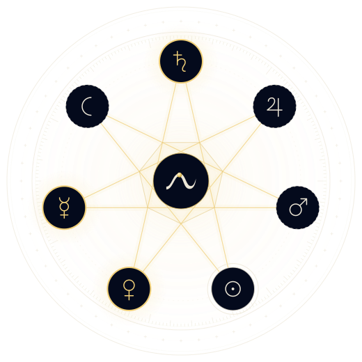

This page is not on the map.
The address may have changed when the site was rebuilt. The seven questions start on the home page.
Go to the home page
The address may have changed when the site was rebuilt. The seven questions start on the home page.
Go to the home page